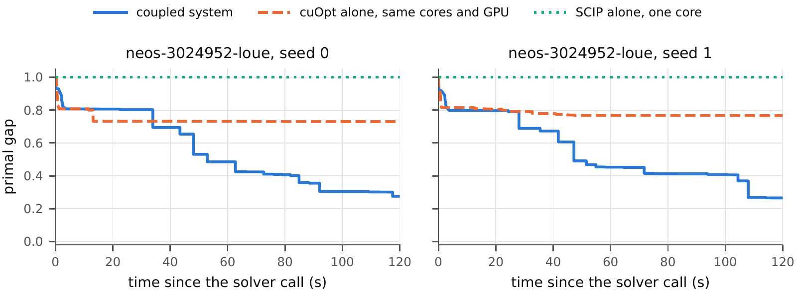

I-TREA II — a GPU evolutionary algorithm coupled with MIP solvers
I-TREA II runs a GPU evolutionary algorithm (EA) beside exact MIP solvers while they run: it trades solutions with SCIP both ways and takes NVIDIA cuOpt's, to find good feasible solutions sooner on each solver's hardest instances.
What this means for SCIP and cuOpt users
Short answer: yes, there is a real chance of a large gain on hard instances, but not on every one. On instances where a solver alone struggles to find good solutions in two minutes, running it inside I-TREA II found good solutions much sooner in our interim tests: about half the primal integral of SCIP alone, and a fifth less than cuOpt alone on the same share of the machine (5 of its 20 cores and the GPU). cuOpt on the whole machine, which is stronger, has not been compared yet. Over all 17 instances, I-TREA II was better than cuOpt alone on 8 and worse on 8; where cuOpt alone already finds a good solution within seconds, I-TREA II can be slower (chromaticindex1024-7: 0.08 → 0.54).
| If you use … | its hard instances | change in mean P(120) with I-TREA II | largest gains | losses |
|---|---|---|---|---|
| SCIP (one CPU core, its default; 6–7 October) | 15 of our 17 | −50 % (cuOpt alone on the same share: −42 %); better on 12, worse on 0 (p = 0.0005) | neos-960392 1.00 → 0.04, ca 1.00 → 0.26 | none |
| cuOpt (same 5 of 20 cores + GPU as I-TREA II) | 11 of our 17 | −20 %; better on 7, worse on 3 (p = 0.03) | neos-960392 0.58 → 0.04, ca 0.56 → 0.26, item_placement 0.49 → 0.22 | doon 0.86 → 1.00, toguru 0.55 → 0.61, rail01 0.98 → 1.00 |
P(120) = the average gap to the best known solution over a 2-minute run: 1 = no solution (or only one with a gap of 1), 0 = optimal from the first second; lower is better. Hard = the solver alone had P(120) ≥ 0.5 (for cuOpt, on earlier runs of cuOpt alone on three cores; item_placement and sing44 now sit just below). Four seeds for I-TREA II and cuOpt alone, two for SCIP alone; p: Wilcoxon signed-rank. For SCIP, the largest gains among the instances where I-TREA II also does better than cuOpt alone. ca = ca__Scenario400_reserves_1 (unit commitment), item_placement = item_placement_9903, doon = neos-2746589-doon, toguru = neos-4763324-toguru.
- Most of the gain over SCIP alone is what cuOpt alone also reaches on the same five cores and GPU (mean P on SCIP's 15: SCIP alone 0.889, cuOpt alone 0.517, I-TREA II 0.448). SCIP alone ran on one core without the GPU, on earlier days (6–7 October), so this comparison measures adopting I-TREA II on a GPU machine; and SCIP's 15 hard instances were picked on the same runs they are compared with (cuOpt's 11 on earlier runs), which can flatter the gain. The cuOpt row shows what I-TREA II adds beyond cuOpt.
- When not to expect it: outside cuOpt's hard set (6 of the 17), I-TREA II was worse than cuOpt alone on 5, by at most 0.022 in P except on chromaticindex1024-7, where the EA's GPU work delays cuOpt's first solution. Where cuOpt alone finds a solution only on some seeds (doon 2 of 4, rail01 1 of 4), I-TREA II found none, and the cause is not yet known; where no solver finds one (cryptanalysis), neither does I-TREA II.
- How sure: interim development results — 17 public instances that we tuned on, 2-minute runs, one DGX Spark (GB10), cuOpt 26.08; cuOpt alone crashed on comp21-2idx on 3 of 4 seeds (a segmentation fault, not yet reported upstream; counted as its result). One instance, neos-960392, carries 35 % of the gain over cuOpt alone; without it, −20 % shrinks to −14 % (ratio of mean P 0.858 instead of 0.798). The test on unseen instances, with cuOpt 26.10, follows in November.
How it works
SCIP and the EA exchange solutions both ways; cuOpt only sends (on cuOpt 26.08, receiving outside solutions disables its presolve). The EA passes to SCIP every solution better than SCIP's incumbent, cuOpt's included.
- Three processes share one GB10, each on its own cores: SCIP (version 10, one core), the GPU EA (CuPy; the GPU and one core) and cuOpt 26.08 (the GPU and three cores).
- The EA's population keeps a capped share of infeasible solutions whose objective is better than the best feasible one, and protects the best feasible ones. An LP worker re-optimises the continuous variables of a few candidates with their integers fixed (LP decoding, with HiGHS).
- Every incumbent is re-checked in exact arithmetic before it counts.
Main findings (interim)

Swipe sideways for seed 1.
neos-3024952-loue, one of the 11 instances hard for
cuOpt alone, seeds 0 and 1 (“coupled system” = I-TREA II). P(120):
I-TREA II 0.539 and 0.538, cuOpt alone 0.740 and
0.779, SCIP alone 1 (no solution in 120 s; 6 October). Chosen by a rule fixed before plotting: I-TREA II's P
closest to the hard set's mean. Reference: MIPLIB's optimum, 26,756. Full-size
image.- Phase 1 closed at its checkpoint with a go. Against cuOpt alone on the same cores and GPU, on the 11 instances hard for cuOpt alone: mean P(120) 0.690 → 0.550 (−20 %), lower on 7, higher on 3, four seeds. Both bars held: the ratio of mean P, 0.798 (needed ≤ 0.95), and the mean per-instance difference over all 17, +0.045 (needed ≥ −0.05); 136 runs, all valid (a crashed run is scored up to the crash). The bars only decide whether testing continues; they declare no success. On 16 October the author decided to continue and froze the configuration.
- Adopted and frozen (
configs/frozen-v2.yaml): the last two changes, added to the 13 October default, each tested alone first. LP decoding re-optimises a candidate's continuous variables with its integers fixed (item_placement 0.330 → 0.198, sing44 0.473 → 0.411). Yield lets the EA's thread give up its core while it waits on the GPU, so the LP worker on that core gets CPU time (adopted after a follow-up test with a loosened bar; see the paper, Section 4.1). Not adopted: a GPU back-off beside cuOpt and a blocking GPU wait. - The known loss:
chromaticindex1024-7, 0.08 → 0.54 against cuOpt alone, because the EA's GPU work delays cuOpt's first solution from 6.5–12.2 s to 65 s. Where cuOpt alone finds a solution only on some seeds (doon 2 of 4, rail01 1 of 4), I-TREA II found none; the cause is not yet known. - Open caveats, carried forward: how much of the gain needs the EA rather than cuOpt's own solutions is not yet measured; cuOpt alone crashed on comp21-2idx on 3 of 4 seeds, with a segmentation fault (not yet reported upstream; counted as its result, which favours I-TREA II there; on the other 10 hard instances: 6 better, 3 worse, p = 0.055); two harm flags against the 13 October configuration: glass4 (read later, in one window, as day-to-day drift) and comp21-2idx (at the edge of its band).
- Next — v1, by the end of November 2026: the frozen configuration on unseen hard instances, with cuOpt 26.10, under rules fixed before the runs, plus our own external benchmark (every compared GPU arm on the same cores and GPU, 600 s). Planned after v1: two-way exchange with cuOpt through its solution callback, and GPU sharing through CUDA MPS.
Read more
- Interim report on phase 1 (PDF)
- 15 pages: method, every tested change, the checkpoint result and its main loss, the benchmark harness.
- README
- The users' answer with all footnotes, how it works, quick start, repository map.
- Phase 1 results note
- Every number and caveat of phase 1.
- Decision records D-001 … D-033
- Every design choice, test and reading, dated; most test rules were fixed before the runs, and the exceptions are listed in the paper's Appendix A.
- AGENTS.md
- For AI agents working in the repository: terms, rules and the code map.
Reproduce
Research code, tested on one DGX Spark (GB10, arm64); not a packaged solver. The coupled system needs Linux, Python 3.12 or later and an NVIDIA GPU with CUDA 13 (CuPy and the cuOpt 26.08 wheel); SCIP 10 (through PySCIPOpt) and HiGHS install with the package. The toy run below needs no GPU.
git clone https://github.com/Tideseed/i-trea-ii && cd i-trea-ii
uv venv && source .venv/bin/activate
uv pip install -e ".[dev,plots,gpu]" # HiGHS, SCIP, CuPy, tests
uv pip install -e ".[cuopt]" --extra-index-url https://pypi.nvidia.com # cuOpt 26.08
pytest -q # toy-scale; GPU tests skip without CuPy
# toy run: SCIP alone, 10 s, no GPU
python -c "from itrea.benchmarks.toy import knapsack, write_mps; write_mps(knapsack(), '/tmp/toy.mps')"
itrea pair --instance /tmp/toy.mps --arm A0 --seed 0 --budget 10 --set smokeYour own instance: there is no supported way yet to run the coupled system on it. The runner pins its processes to fixed cores of the GB10 and starts them in systemd user scopes, and the coupled system needs CuPy and cuOpt; it has been run only on the study's instances, on one DGX Spark. The toy run above uses the same runner with SCIP alone.
The study's chain: job files in jobs/ → itrea pool → itrea build-runs (checks
every incumbent) → the checkpoint readings (tools/d031_report.py) → tools/paper_tables.py
--check. The raw runs (about 3.5 GB) are to be published as a versioned archive; until then, re-running the
job files on the public instances is a new replication, and wall-clock results will differ on other hardware. See the
README.
Cite
@misc{orbay2026itrea2,
author = {Orbay, Berk},
title = {{I-TREA II}: a {GPU} evolutionary algorithm coupled with {MIP} solvers
--- interim report on development (phase 1)},
year = {2026},
month = oct,
howpublished = {Interim report, 17 October 2026},
url = {https://github.com/Tideseed/i-trea-ii/blob/main/paper/main.pdf}
}